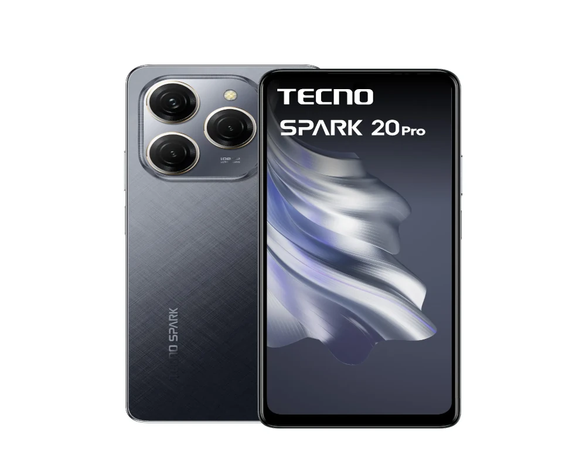

Spark 20 Pro
El Tecno Spark 20 Pro es un dispositivo móvil que cuenta con varias características destacadas.
- Procesador: El dispositivo está equipado con un procesador MediaTek Helio G99, que ofrece un rendimiento eficiente y rápido.
- Memoria y almacenamiento: El Spark 20 Pro cuenta con 8 GB de memoria RAM y 256 GB de almacenamiento interno, lo que permite una experiencia de usuario fluida y suficiente espacio para almacenar aplicaciones y datos.
- Pantalla: La pantalla del dispositivo es de 6.78 pulgadas con tecnología IPS LCD, lo que ofrece una visualización nítida y vibrante.
- Cámara: El Spark 20 Pro cuenta con una cámara principal de 108 MP y una cámara frontal de 32 MP, lo que permite capturar fotos y videos de alta calidad.
- Batería: El dispositivo tiene una batería de 5000 mAh con carga rápida de 33W, lo que garantiza una autonomía prolongada y una carga rápida.
- Conectividad: El Spark 20 Pro ofrece conectividad Wi-Fi 5, Bluetooth 5.2, GPS y NFC, lo que permite una conexión estable y segura a diferentes redes y dispositivos.
- Diseño: El dispositivo tiene un diseño elegante y resistente, con un cuerpo de plástico y una pantalla con protección contra golpes y rasguños.
- Sistema operativo: El Spark 20 Pro viene con el sistema operativo HiOS 13.5 basado en Android 13, lo que ofrece una experiencia de usuario intuitiva y personalizable.
$300